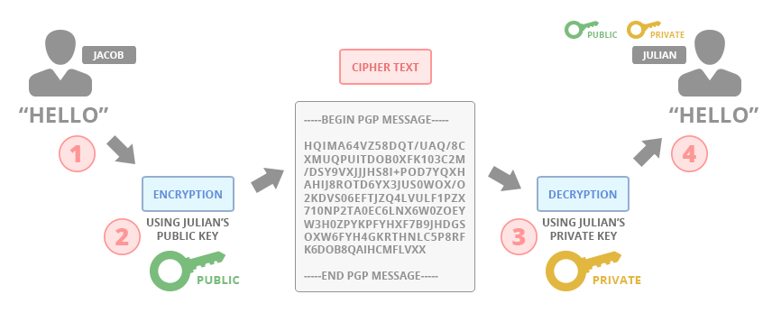
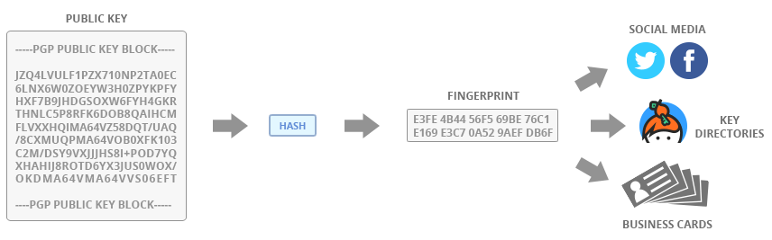
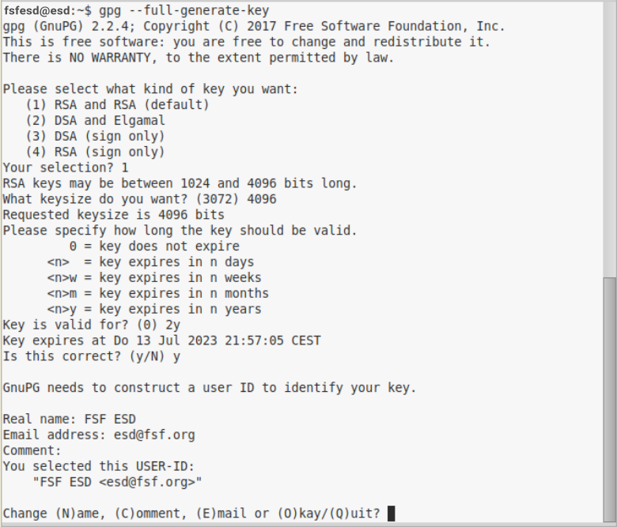
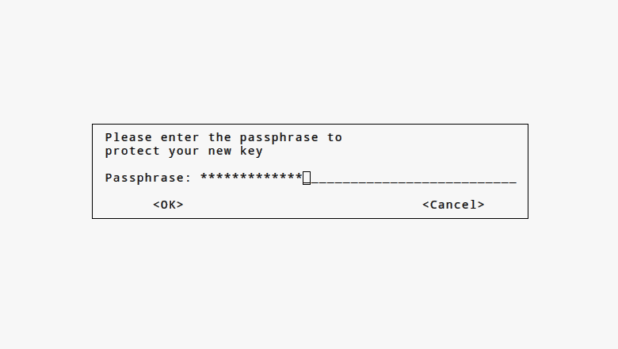

PGP & GPG
Pretty Good Privacy & GNU Privacy GuardHistória
O OpenPGP é um protocolo não proprietário para criptografar e-mails usando criptografia de chave pública. O protocolo OpenPGP define formatos padrão para mensagens criptografadas, assinaturas, chaves privadas e certificados para trocar chaves públicas.
É baseado no software de freeware Pretty Good Privacy (PGP) como originalmente desenvolvido em 1991 por Phil Zimmermann. Para isso, ele foi alvo de uma investigação criminal de três anos, porque o governo dos EUA considerou que as restrições de exportação dos EUA para software criptográfico foram violadas quando o PGP se espalhou por todo o mundo após sua publicação como freeware.
Apesar da falta de financiamento, da falta de pessoal remunerado, da falta de uma empresa para apoiá-la e, apesar da perseguição do governo, o PGP tornou-se o software de criptografia de e-mail mais usado no mundo. Depois que o governo abandonou seu caso no início de 1996, a Zimmermann fundou a PGP Inc. Essa empresa e sua propriedade intelectual foram adquiridas pela Network Associates Inc (NAI) em dezembro de 1997. A NAI continuou a possuir e desenvolver produtos PGP para fins comerciais e de serviços de livre armazenamento. Em 2002, a NAI interrompeu o desenvolvimento e as vendas do PGP e vendeu os direitos a uma nova empresa, a PGP Corporation.
GNU Privacy Guard
O GnuPG é uma implementação completa e livre do padrão OpenPGP, conforme definido por RFC4880 (também conhecido como PGP). O GnuPG permite criptografar e Assine seus dados e comunicações; ele possui um gerenciamento de chaves versátil sistema, juntamente com módulos de acesso para todos os tipos de chave pública - Os diretórios. GnuPG, também conhecido como GPG, é uma ferramenta de linha de comando com recursos para facilitar a integração com outras aplicações. Uma riqueza de Aplicativos frontend e bibliotecas estão disponíveis. GnuPG também fornece suporte para S / MIME e Secure Shell (ssh).
Desde a sua introdução em 1997, o GnuPG é Software Livre (o que significa que respeita a sua liberdade). Pode ser usado livremente, modificado e distribuído sob os termos da Licença Pública Geral GNU.
Porque Usar GPG
O GPG utiliza algoritmos de criptografia robustos e comprovados, garantindo a segurança dos dados e comunicações protegidas.
A criptografia de chave pública do GPG permite que os usuários protejam suas informações pessoais e comunicações contra acesso não autorizado.
O GPG pode ser utilizado para proteger e-mails, mensagens instantâneas e outros tipos de comunicação online, garantindo que apenas o destinatário pretendido possa acessar o conteúdo.
O GPG permite que os usuários assinem digitalmente documentos e arquivos, garantindo sua autenticidade e integridade.
Em resumo, hoje em dia com a constante, vigilância/espionagem praticadas por governos e empresas, suas informações pessoais estão a mercê de terceiros malignos que buscam o controle total a sua comunicação na internet. Se você se importa com a sua privacidade siga o tutorial abaixo.
Criptografando / Descriptografando
Na criptografia de chave pública, os processos de criptografia e descriptografia dependem de pares de chaves matematicamente únicos. Consiste em duas chaves, uma chamada chave pública e outra chamada chave privada, ambas capazes de criptografar e descriptografar uma à outra. Uma chave pública representa uma função unidirecional semelhante a um cadeado aberto – uma propriedade de segurança que qualquer pessoa pode bloquear facilmente, mas apenas o detentor da chave privada pode abrir. A essência desta operação é que a chave privada usada para descriptografar uma mensagem criptografada de chave pública deve sempre permanecer secreta, conhecida apenas pelo proprietário do par de chaves.
Se Jacob quiser enviar uma mensagem criptografada para Julian, ele precisará da chave pública de Julian. Isso significa que Julian deve compartilhar sua chave pública com Jacob. Jacob pode então obter a chave pública de Julian, usá-la para criptografar a mensagem e enviar o texto cifrado criptografado para Julian. Depois de receber a mensagem, Julian pode usar sua chave privada para descriptografar a mensagem.
Fingerprint
Fingerprint (ou impressão digital) da chave PGP. Ela é uma representação compacta e única da chave pública, geralmente composta por 40 caracteres hexadecimais. Essa impressão digital é gerada a partir da chave pública completa e serve como uma forma rápida de verificar a autenticidade da chave.
Algumas informações importantes sobre a impressão digital da chave pública:
-
Identificação Rápida: A impressão digital é usada para verificar se a chave pública que você possui corresponde à chave pública de outra pessoa. Em vez de comparar as chaves completas, você pode comparar as impressões digitais para garantir que sejam idênticas.
-
Verificação de Chaves: Quando você troca chaves PGP com alguém, compartilhar a impressão digital é uma maneira eficaz de garantir que você está usando a chave correta. Você pode comparar as impressões digitais pessoalmente ou por meio de canais seguros.
-
Assinaturas Digitais: A impressão digital também é usada em assinaturas digitais. Quando alguém assina uma mensagem ou arquivo com sua chave privada, a impressão digital é incluída na assinatura. Isso permite que outros verifiquem a autenticidade da assinatura usando sua chave pública e a correspondente impressão digital.
A impressão digital é uma representação resumida da chave pública e não deve ser usada para criptografar ou descriptografar mensagens. Ela é apenas uma ferramenta para verificar a autenticidade das chaves PGP.
Instalação
Linux:A maioria dos sistemas operacionais GNU/Linux vem com GnuPG instalado, porém caso o seu sistema seja um exceção, digite o seguinte comando em seu terminal:
sudo apt-get install gpg Windows:GPG4Win é um pacote de software de criptografia de e-mail e arquivos que inclui GnuPG. Faça o download e instale a versão mais recente, escolhendo as opções padrão sempre que solicitado. Depois de instalado, você pode fechar as janelas que ele cria.
MAC:Usar um gerenciador de pacotes de terceiros para instalar o GnuPG
O gerenciador de pacotes padrão do macOS dificulta a instalação do GnuPG e de outros softwares gratuitos (como Emacs, GIMP ou Inkscape). Para facilitar as coisas, recomendamos configurar o gerenciador de pacotes de terceiros "Homebrew" para instalar o GnuPG. Para isso, usaremos um programa chamado "Terminal", que é pré-instalado no macOS.
Copie o primeiro comando na página inicial do Homebrew clicando no ícone da área de transferência e cole-o no Terminal. Clique em "Enter" e aguarde a conclusão da instalação.
Em seguida, instale o GnuPG digitando o seguinte código no Terminal:
brew install gnupg gnupg2Criando sua Chave
Para usar o sistema GnuPG, você precisará de uma chave pública e uma chave privada (conhecida juntos como um papel de chave). Cada um é uma longa sequência de números gerados aleatoriamente e cartas que são exclusivas para você. Suas chaves públicas e privadas estão ligadas juntos por uma função matemática especial.
Sua chave pública não é como uma chave física, porque está armazenada no aberto em um diretório on-line chamado keyserver. As pessoas fazem o download e usam, juntamente com GnuPG, para criptografar e-mails que eles enviam para você. Você pode pensar no servidor de chaves como uma lista telefônica; as pessoas que querem enviar e-mails criptografados podem Olhe para a sua chave pública.
Sua chave privada é mais como uma chave física, porque você a mantém para você mesmo (no seu computador). Você usa o GnuPG e sua chave privada juntos para descramble e-mails criptografados que outras pessoas enviam para você. Você nunca deve compartilhar sua chave privada com ninguém, sob qualquer circunstâncias.
Terminal:Vamos usar a linha de comando em um terminal para criar um chaveiro usando o O programa GnuPG.
Seja no GNU/Linux, macOS ou Windows, você pode iniciar o seu Terminal ("Terminal" no macOS, "PowerShell" no Windows).-
Cole o comando abaixo em seu terminal para iniciar o processo e gerar a sua chave.
gpg --full-generate-keySerá solicitado que você responda algumas perguntas técnicas e outras pessoais básicas para associar você a chave que está gerando.
 -
Tipo de chave: Você pode escolher o tipo de chave desejado. Pressione Enter para aceitar o padrão (geralmente RSA).
1 -
Tamanho da chave: Escolha o tamanho da chave. Pressione Enter para aceitar o padrão (geralmente 4096 bits).
4096 -
Prazo de validade da chave: Digite o prazo de validade da chave. Pressione Enter para especificar que a chave não vence (a menos que você precise de uma data de validade específica).
0 -
Verifique suas seleções: Verifique se as seleções estão corretas.
y -
ID de usuário: Insira seu ID de usuário (geralmente seu endereço de e-mail verificado para sua conta do GitHub).
Real name:
meu nomeEmail address:
meuemail@proton.mecomment:
Jesus tornou a lei ainda mais perfeita, da mesma forma o Bitcoin veio para aprimorar a propriedade privada.Change (N)ame, (C)omment, (E)mail or (O)Kay/(Q)uit?
o -
Frase secreta: Digite uma frase secreta segura.

Comandos GPG
- Listar Chaves Disponíveis:
Para listar todas as chaves disponíveis em seu sistema, use o comando:
gpg --list-keys - Listar Chaves por Padrão:
Se você deseja listar chaves com base em um padrão específico (por exemplo, filtrar por nome ou e-mail), use:
gpg --list-keys (padrão) - Exportar Chave Pública:
Para exportar sua chave pública para um arquivo (por exemplo, “chavepub.txt”), use:
gpg --armor --output chavepub.txt --export (chavepub)Substitua (chavepub) pelo e-mail ou nome da chave pública que você deseja exportar.
- Importar Chave Pública:
Se você tiver uma chave pública em um arquivo (por exemplo, “chavepub.txt”), importe-a usando:
gpg --import chavepub.txt - Encriptografar Arquivos com Chave Pública:
Para encriptografar um arquivo usando uma chave pública, execute:
gpg --encrypt --recipient (chavepub) arquivo.txtSubstitua (chavepub) pela chave pública relevante e “arquivo.txt” pelo nome do arquivo que você deseja criptografar.
- Assinar Arquivos Digitalmente:
Para assinar um arquivo digitalmente, use:
gpg --sign arquivo.txtIsso criará uma assinatura digital para o arquivo.
- Assinar Arquivos Digitalmente (Com uma chave especifica):
Quando você assina digitalmente um arquivo usando o GNU Privacy Guard (GPG), a chave usada para assinar é automaticamente determinada com base na sua configuração. O GPG seleciona sua chave privada padrão para realizar a assinatura.
Se você possui várias chaves privadas, o GPG escolherá aquela associada ao seu identificador (normalmente seu endereço de e-mail) ou à chave que você especificou anteriormente em suas configurações.
No entanto, se você deseja assinar com uma chave específica, pode usar a opção --local-user seguida do ID da chave (geralmente o endereço de e-mail associado a ela). Por exemplo:
gpg --local-user meuemail@exemplo.com --sign arquivo.txtSubstitua meuemail@exemplo.com pelo seu endereço de e-mail ou pelo ID da chave que você deseja usar para a assinatura.
Na maioria dos casos, o GPG escolherá automaticamente a chave correta com base nas configurações padrão, mas você pode especificar manualmente se necessário. 🗝️🔏
- Verificar Assinaturas Digitais:
Para verificar a assinatura digital de um arquivo, execute:
gpg --verify arquivo.txtIsso verificará se a assinatura é válida.
- Decriptografar Arquivos com Chave Privada:
Para decriptografar um arquivo usando sua chave privada, use:
gpg --decrypt arquivo.gpgIsso descriptografará o arquivo e, se ele estiver assinado, também verificará a assinatura.
Fontes
Pagamento
⚡ Lightning Network guerrelr0@getalby.com